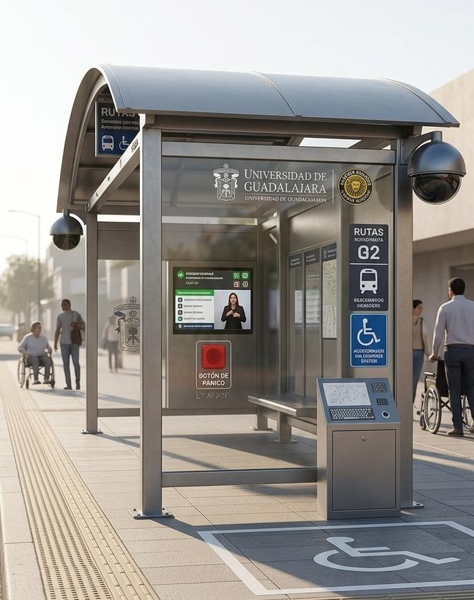

Accesibilidad Universal
Espacios diseñados para eliminar las barreras de movilidad y comunicación.
Movilidad Física
Rampas de acceso normativas, áreas de espera para sillas de ruedas y plataformas de abordaje niveladas con la unidad.
Guías y Audio
Pavimento podotáctil de alta durabilidad, señalética en Braille y sistemas de audio para anunciar rutas y tiempos de llegada.
Señales Visuales
Pantallas de alto contraste con información en tiempo real y alertas luminosas estroboscópicas de proximidad.
CiberSeguridad Presente
La seguridad estudiantil es nuestro pilar. Cada parada cuenta con tecnología de respuesta inmediata conectada al centro de monitoreo institucional.
Botón de Pánico
Ubicado ergonómicamente para una activación rápida en situaciones de riesgo.
Monitoreo con Cámaras 360°
Cámaras domo de alta resolución con visión nocturna y enlace directo al C5-UdeG.

Circuito Cerrado Activo
Visualización de prototipo inclusivo.
Equipo de Desarrollo
Nexoz Team
Santiago Salazar Vazquez
santiago.salazar4935@alumnos.udg.mx
Yael Alejandro Díaz García
yael.diaz6128@alumnos.udg.mx
Víctor Hugo Pérez Sánchez
victor.perez5010@alumnos.udg.mx
Jonathan Hernandez Zaragoza
jonathan.hernandez4990@alumnos.udg.mx
Victor Adrian Vega Ruvalcaba
victor.vega4976@alumnos.udg.mx
Alberto Gael Canales García
alberto.canales8066@alumnos.udg.mx